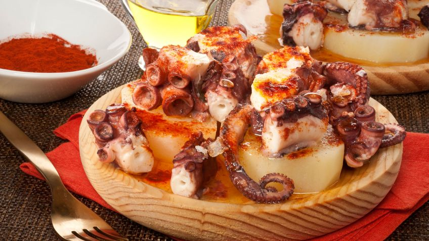

PULPO A LA GALLEGA
Western Dish (Spain)

Takes 40 minutes
Makes 6 servings
MAIN DISH
Ingredients
- 2 lbs octopus
- 1 onion
- 2 bay leaves
- 2 larger potatoes, boiled and sliced diagonally into rounds (about 1/2" in thickness or less)
- 1 teaspoon hot paprika, to taste (about, or more)
- sea salt
- extra virgin olive oil
Instruction
- 1. Fill a large soup pot with water, enough to submerge the octopus.
- 2. Cut onion in half and add to water, along with the bay leaves.
- 3. Some will say that also adding a wine cork (yes a wine cork) will ensure a tender octopus.
- 4. You are within your rights to use your culinary judgement on that particular point.
- 5. Bring the water to boiling, and submerge the octopus 3 or 4 times, to scald it basically.
- 6. Bring the water back to a boil and place the octopus in the water. This time we will leave it in there.
- 7. Reduce heat to a simmer, and cook the octopus 20 minutes-- a larger octopus will require longer cooking time-- up to 45 minutes.
- Remove from water, and slice diagonally into rounds (ovals really).The slices should be about 1/2" thick.
SOURCE : http://www.geniuskitchen.com
Add to Cart
want to try this recipe? order ingredients now!